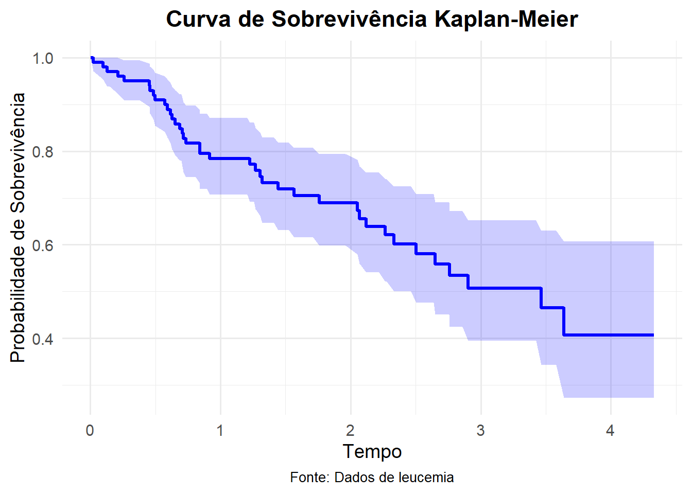

O segundo capítulo do livro que está sendo usado como um dos livros-base, apresenta as técnicas não-paramétricas utilizadas para a análise de dados de sobrevivência. Essas técnicas são empregadas quando não se faz suposições sobre a forma específica da distribuição dos tempos de falha, sendo particularmente úteis para dados censurados.
2.2 O Estimador de Kaplan-Meier
Proposto em 1958 por Edward L. Kaplan e Paul Meier. É um estimador não-paramétrico utilizado para estimar a função de sobrevivência, \(S(t)\). Tal estimador também é chamado de de . O Estimador de Kaplan-Meier é uma adaptação a \(S(t)\) empiríca que, na ausência de censura nos dados, é definida como:
\[\hat{S}(t) = \dfrac{\text{nº de observações que não falharam até o tempo } t}{\text{nº total de observações no estudo}}.\]
\(\hat{S}(t)\) é uma função que tem uma formato gráfico de escada com degraus nos tempos observados de falha de tamanho \(1/n\), onde \(n\) é o tamanho amostral.
O processo utilizado até se obter a estimativa de Kaplan-Meier é um processo passo a passo, em que o próximo passo depende do anterior. De forma suscetível, para qualquer \(t\), \(S(t)\) pode ser escrito em termos de probabilidades condicionais. Suponha que existam \(n\) pacientes no estudo e \(k (\leq n)\) falhas distintas nos tempos \(t_{1} \leq t_{2} \leq \cdots \leq t_{k}\). Considerando \(S(t)\) uma função discreta com probabilidade maior que zero somente nos tempos de falha \(t_{j}\), \(j = 1, \cdots, k\), tem-se que:
em que \(q_{j}\) é a probabilidade de um indivíduo morrer no intervalo \([t_{j-1}, t{j})\) sabendo que ele não morreu até \(t_{j-1}\) e considerando \(t_{0} = 0\). Ou seja, pode se escrever \(q_{j}\) como:
A expressão geral do estimador de Kaplan-Meier pode ser apresentada após estas considerações preliminares, Formalmente, considere:
\(t_{1} \leq t_{2} \leq \cdots \leq t_{k}\), os \(k\) tempos distintos e ordenados de falha;
\(d_{j}\) o número de falhas em \(t_{j}\), \(j = 1, \cdots, k\);
\(n_{j}\) o número de indivíduos sob risco em \(t_{j}\), ou seja, os indivíduos que não falharam e não foram censurados até o instante imediatamente anterior a \(t_{j}\).
Com isso, pode-se definir o estimador de Kaplan-Meier como:
De forma intuitiva, por assim dizer, a Equação 2.3 é proveniente da Equação 2.1, sendo está, uma decomposição de \(S(t)\) em termos \(q_{j}\)’s. Assim, a Equação 2.3 é justificada se os \(q_{j}\)’s forem estimados por \(d_{j}/n_{j}\), que em palavras está expresso na Equação 2.2. No artigo original de 1958, Kaplan e Meier provam que a Equação 2.3 é um estimador de máxima verossimilhança para \(S(t)\). Seguindo certos passos, é possível provar que que \(\hat{S}_{KM}(t)\) é um estimador de máxima verossimilhança de \(S(t)\). Supondo que \(d_{j}\) observações falham no tempo tempo \(t_{j}\), para \(j = 1, \cdots, k\), e \(m_{j}\) observações são censuradas no intervalo \([t{j}, t_{j+1})\), nos tempos \(t_{j1}, \cdots, t_{jm_{j}}\). A probabilidade de falha no tempo \(t_{j}\) é, então,
\[S(t_{j}) - S(t_{j}+),\]
com \(S(t_{j}+) = \lim_{\Delta t \to 0+} S(t_{j} + \Delta t)\), \(j = 1, \cdots, k\). Por outro lado, a contribuição para a função de verossimilhança de um tempo de sobrevivência censurado em \(t_{jl}\) para \(l = 1, \cdots, m_{j}\), é:
\[P(T > t_{jl}) = S(t_{jl}+).\]
A função de verossimilhança pode, então, ser escrita como:
Com isso, é possível provar que \(S(t)\) que maximiza \(L(S(\cdot))\) é exatamente a expressão dada pela Equação 2.3.
2.2.1 Propriedades do Estimador de Kaplan-Meier
Como um estimador de máxima verossimilhança, o estimador de Kaplan-Meier têm interessantes propriedades. As principais são:
É não-viciado para grandes amostras;
É fracamente consistente;
Converge assintoticamente para um processo gaussiano.
A consistência e normalidade assintótica de \(\hat{S}_{KM}(t)\) foram provadas sob certas condições de regularidade, por Breslow e Crowley (1974) e Meier (1975) e, no artigo original Kaplan e Meier (1958) mostram que \(\hat{S}_{KM}(t)\) é o estimador de máxima verossimilhança, como já dito.
2.2.2 Variância do Estimador de Kaplan-Meier
Para que se possa construir intervalos de confiança e testar hipóteses para \(S(t)\), se faz necessário ter conhecimento quanto variabilidade e precisão do estimador de Kaplan-Meier. Este estimador, assim como outros, está sujeito a variações que devem ser descritas em termos de estimações intervalares. A expressão assintótica do estimador de Kaplan-Meier é dada pela Equação 2.4.
A expressão dada na Equação 2.4, é conhecida como fórmula de Greenwood e pode ser obtida a partir de propriedades do estimador de máxima verossimilhança. Os detalhes da obtenção da (Equação 2.4 estão disponíveis em Kalbfleisch e Prentice (1980, pag. 12-14).
Como \(\hat{S}_{KM}(t)\), para um \(t\) fixo, tem distribuição assintóticamente Normal. O intervalo de confiança com \(100(1 - \alpha)\)% de confiança para \(\hat{S}_{KM}(t)\) é expresso por:
Vale salientar que para valores extremos de \(t\), este intervalo de confiança pode apresentar limites que não condizem com a teoria de probabilidades. Para solucionar tal problema, aplica-se uma transformação em \(S(t)\) como, por exemplo, \(\hat{U}(t) = \log{[-\log{(\hat{S}_{KM}(t)})]}\). Esta transformação foi sugerida por Kalbfleisch e Prentice (1980), tendo sua variância estimada por:
\[
\hat{Var}[\hat{U}(t)] = \dfrac{ \sum_{j \text{ : } t_{j} < t} \dfrac{d_{j}}{n_{j} (n_{j} - d_{j})} }{ \left[\sum_{j \text{ : } t_{j} < t} \log{\left( \dfrac{n_{j} - d_{j}}{n_{j}} \right)}\right]^{2}} = \dfrac{ \sum_{j \text{ : } t_{j} < t} \dfrac{d_{j}}{n_{j} (n_{j} - d_{j})} }{ \left[ \log{\hat{S}_{KM}(t)} \right]^{2} }
\] Veja uma aplicação do Estimador de Kaplan-Meier. Os dados dispostos no Apêndice (*) do livro de Análise de Sobrevivência Aplicado, de Enrico e Giolo.
Código
# -----------------------# [1] ATIVAÇÃO DE PACOTES# -----------------------if (!require("survival")){install.packages("survival")}
Carregando pacotes exigidos: survival
Código
if (!require("ggplot2")) {install.packages("ggplot2")}
Carregando pacotes exigidos: ggplot2
Código
library(survival)library(ggplot2)# ---------------------------------# [2] IMPORTAÇÃO E AJUSTE DOS DADOS# ---------------------------------# Caminho URL para os dadosurl <-"https://docs.ufpr.br/~giolo/asa/dados/leucemia.txt"# Leitura dos dadosdados <-read.table(url, header =TRUE)# -------------# [3] ESTIMAÇÃO# -------------# -------------------------------# [3.1] ESTIMADOR DE KAPLAN-MEIER# -------------------------------ekm <-survfit(Surv(tempos, cens) ~1, data = dados)# -----------------# [4] VISUALIZAÇÃO# -----------------# Preparando os dados para o ggplot2ekm_data <-data.frame(time = ekm$time,survival = ekm$surv,lower = ekm$lower,upper = ekm$upper)# Gráfico com ggplot2ggplot(ekm_data, aes(x = time, y = survival)) +geom_step(color ="blue", size =1.2) +geom_ribbon(aes(ymin = lower, ymax = upper), fill ="blue", alpha =0.2) +labs(title ="Curva de Sobrevivência Kaplan-Meier",x ="Tempo",y ="Probabilidade de Sobrevivência",caption ="Fonte: Dados de leucemia" ) +theme_minimal(base_size =14) +theme(plot.title =element_text(hjust =0.5, face ="bold"),plot.caption =element_text(size =10, hjust =0.5) )
Warning: Using `size` aesthetic for lines was deprecated in ggplot2 3.4.0.
ℹ Please use `linewidth` instead.

2.3 Outros Estimadores Não Parâmetricos
Texto a ser preenchido…
2.3.1 Estimador de Nelson-Aalen
Texto a ser preenchido…
2.4 Testes de Hipóteses para Comparação de Curvas de Sobrevivência
Código fonte
```{=html}<style> body{text-align: justify}</style>```:::: progress::: {.progress-bar style="width: 100%;"}:::::::# Técnicas Não Paramétricas## IntroduçãoO segundo capítulo do livro que está sendo usado como um dos livros-base, apresenta as técnicas não-paramétricas utilizadas para a análise de dados de sobrevivência. Essas técnicas são empregadas quando não se faz suposições sobre a forma específica da distribuição dos tempos de falha, sendo particularmente úteis para dados censurados.## O Estimador de Kaplan-MeierProposto em 1958 por Edward L. Kaplan e Paul Meier. É um estimador não-paramétrico utilizado para estimar a função de sobrevivência, $S(t)$. Tal estimador também é chamado de de \textit{estimador limite-produto}. O Estimador de Kaplan-Meier é uma adaptação a $S(t)$ empiríca que, na ausência de censura nos dados, é definida como:$$\hat{S}(t) = \dfrac{\text{nº de observações que não falharam até o tempo } t}{\text{nº total de observações no estudo}}.$$\noindent $\hat{S}(t)$ é uma função que tem uma formato gráfico de escada com degraus nos tempos observados de falha de tamanho $1/n$, onde $n$ é o tamanho amostral.O processo utilizado até se obter a estimativa de Kaplan-Meier é um processo passo a passo, em que o próximo passo depende do anterior. De forma suscetível, para qualquer $t$, $S(t)$ pode ser escrito em termos de probabilidades condicionais. Suponha que existam $n$ pacientes no estudo e $k (\leq n)$ falhas distintas nos tempos $t_{1} \leq t_{2} \leq \cdots \leq t_{k}$. Considerando $S(t)$ uma função discreta com probabilidade maior que zero somente nos tempos de falha $t_{j}$, $j = 1, \cdots, k$, tem-se que:$$S(t_{j}) = (1 - q_{1}) (1 - q_{2}) \cdots (1 - q_{j}),$$ {#eq-DecomposeSt}\noindent em que $q_{j}$ é a probabilidade de um indivíduo morrer no intervalo $[t_{j-1}, t{j})$ sabendo que ele não morreu até $t_{j-1}$ e considerando $t_{0} = 0$. Ou seja, pode se escrever $q_{j}$ como:$$q_{j} = P(T \in [t_{j-1}, t{j}) | T \geq t_{j-1}),$$ {#eq-FormProbQj}\noindent para $j = 1, \cdots, k$.A expressão geral do estimador de Kaplan-Meier pode ser apresentada após estas considerações preliminares, Formalmente, considere:- $t_{1} \leq t_{2} \leq \cdots \leq t_{k}$, os $k$ tempos distintos e ordenados de falha;- $d_{j}$ o número de falhas em $t_{j}$, $j = 1, \cdots, k$;- $n_{j}$ o número de indivíduos sob risco em $t_{j}$, ou seja, os indivíduos que não falharam e não foram censurados até o instante imediatamente anterior a $t_{j}$.Com isso, pode-se definir o estimador de Kaplan-Meier como:$$\hat{S}_{KM}(t) = \prod_{j \text{ : } t_{j} < t} \left( \dfrac{n_{j} - d_{j}}{n_{j}} \right) = \prod_{j \text{ : } t_{j} < t} \left( 1 - \dfrac{d_{j}}{n_{j}} \right)$$ {#eq-ESTKaplanMeier}De forma intuitiva, por assim dizer, a @eq-ESTKaplanMeier é proveniente da @eq-DecomposeSt, sendo está, uma decomposição de $S(t)$ em termos $q_{j}$'s. Assim, a @eq-ESTKaplanMeier é justificada se os $q_{j}$'s forem estimados por $d_{j}/n_{j}$, que em palavras está expresso na @eq-FormProbQj. No artigo original de 1958, Kaplan e Meier provam que a @eq-ESTKaplanMeier é um *estimador de máxima verossimilhança* para $S(t)$. Seguindo certos passos, é possível provar que que $\hat{S}_{KM}(t)$ é um estimador de máxima verossimilhança de $S(t)$. Supondo que $d_{j}$ observações falham no tempo tempo $t_{j}$, para $j = 1, \cdots, k$, e $m_{j}$ observações são censuradas no intervalo $[t{j}, t_{j+1})$, nos tempos $t_{j1}, \cdots, t_{jm_{j}}$. A probabilidade de falha no tempo $t_{j}$ é, então,$$S(t_{j}) - S(t_{j}+),$$\noindent com $S(t_{j}+) = \lim_{\Delta t \to 0+} S(t_{j} + \Delta t)$, $j = 1, \cdots, k$. Por outro lado, a contribuição para a função de verossimilhança de um tempo de sobrevivência censurado em $t_{jl}$ para $l = 1, \cdots, m_{j}$, é:$$P(T > t_{jl}) = S(t_{jl}+).$$A função de verossimilhança pode, então, ser escrita como:$$L(S(\cdot)) = \prod_{j = 0}^{k} \left\{[ S(t_{j}) - S(t_{j}+) ]^{d_{j}} \prod_{l = 1}^{m_{j}} S(t_{jl}+) \right\}.$$\noindent Com isso, é possível provar que $S(t)$ que maximiza $L(S(\cdot))$ é exatamente a expressão dada pela @eq-ESTKaplanMeier.### Propriedades do Estimador de Kaplan-MeierComo um estimador de máxima verossimilhança, o estimador de Kaplan-Meier têm interessantes propriedades. As principais são:- É não-viciado para grandes amostras;- É fracamente consistente;- Converge assintoticamente para um processo gaussiano.A consistência e normalidade assintótica de $\hat{S}_{KM}(t)$ foram provadas sob certas condições de regularidade, por Breslow e Crowley (1974) e Meier (1975) e, no artigo original Kaplan e Meier (1958) mostram que $\hat{S}_{KM}(t)$ é o estimador de máxima verossimilhança, como já dito.### Variância do Estimador de Kaplan-MeierPara que se possa construir intervalos de confiança e testar hipóteses para $S(t)$, se faz necessário ter conhecimento quanto variabilidade e precisão do estimador de Kaplan-Meier. Este estimador, assim como outros, está sujeito a variações que devem ser descritas em termos de estimações intervalares. A expressão assintótica do estimador de Kaplan-Meier é dada pela @eq-VarKaplanMeier.$$\hat{Var}[\hat{S}_{KM}(t)] = [\hat{S}_{KM}(t)]^{2} \sum_{j \text{ : } t_{j} < t} \dfrac{d_{j}}{n_{j} (n_{j} - d_{j})}$$ {#eq-VarKaplanMeier}A expressão dada na @eq-VarKaplanMeier, é conhecida como fórmula de Greenwood e pode ser obtida a partir de propriedades do estimador de máxima verossimilhança. Os detalhes da obtenção da (@eq-VarKaplanMeier estão disponíveis em Kalbfleisch e Prentice (1980, pag. 12-14).Como $\hat{S}_{KM}(t)$, para um $t$ fixo, tem distribuição assintóticamente Normal. O intervalo de confiança com $100(1 - \alpha)$% de confiança para $\hat{S}_{KM}(t)$ é expresso por:$$\hat{S}_{KM}(t) \pm z_{\alpha/2} \sqrt{\hat{Var}[\hat{S}_{KM}(t)]}.$$Vale salientar que para valores extremos de $t$, este intervalo de confiança pode apresentar limites que não condizem com a teoria de probabilidades. Para solucionar tal problema, aplica-se uma transformação em $S(t)$ como, por exemplo, $\hat{U}(t) = \log{[-\log{(\hat{S}_{KM}(t)})]}$. Esta transformação foi sugerida por Kalbfleisch e Prentice (1980), tendo sua variância estimada por:$$\hat{Var}[\hat{U}(t)] = \dfrac{ \sum_{j \text{ : } t_{j} < t} \dfrac{d_{j}}{n_{j} (n_{j} - d_{j})} }{ \left[\sum_{j \text{ : } t_{j} < t} \log{\left( \dfrac{n_{j} - d_{j}}{n_{j}} \right)}\right]^{2}} = \dfrac{ \sum_{j \text{ : } t_{j} < t} \dfrac{d_{j}}{n_{j} (n_{j} - d_{j})} }{ \left[ \log{\hat{S}_{KM}(t)} \right]^{2} }$$Veja uma aplicação do Estimador de Kaplan-Meier. Os dados dispostos no Apêndice (*) do livro de Análise de Sobrevivência Aplicado, de Enrico e Giolo.```{r}# -----------------------# [1] ATIVAÇÃO DE PACOTES# -----------------------if (!require("survival")){install.packages("survival")}if (!require("ggplot2")) {install.packages("ggplot2")}library(survival)library(ggplot2)# ---------------------------------# [2] IMPORTAÇÃO E AJUSTE DOS DADOS# ---------------------------------# Caminho URL para os dadosurl <-"https://docs.ufpr.br/~giolo/asa/dados/leucemia.txt"# Leitura dos dadosdados <-read.table(url, header =TRUE)# -------------# [3] ESTIMAÇÃO# -------------# -------------------------------# [3.1] ESTIMADOR DE KAPLAN-MEIER# -------------------------------ekm <-survfit(Surv(tempos, cens) ~1, data = dados)# -----------------# [4] VISUALIZAÇÃO# -----------------# Preparando os dados para o ggplot2ekm_data <-data.frame(time = ekm$time,survival = ekm$surv,lower = ekm$lower,upper = ekm$upper)# Gráfico com ggplot2ggplot(ekm_data, aes(x = time, y = survival)) +geom_step(color ="blue", size =1.2) +geom_ribbon(aes(ymin = lower, ymax = upper), fill ="blue", alpha =0.2) +labs(title ="Curva de Sobrevivência Kaplan-Meier",x ="Tempo",y ="Probabilidade de Sobrevivência",caption ="Fonte: Dados de leucemia" ) +theme_minimal(base_size =14) +theme(plot.title =element_text(hjust =0.5, face ="bold"),plot.caption =element_text(size =10, hjust =0.5) )```## Outros Estimadores Não ParâmetricosTexto a ser preenchido...### Estimador de Nelson-AalenTexto a ser preenchido...## Testes de Hipóteses para Comparação de Curvas de Sobrevivência:::: progress::: {.progress-bar style="width: 100%;"}:::::::